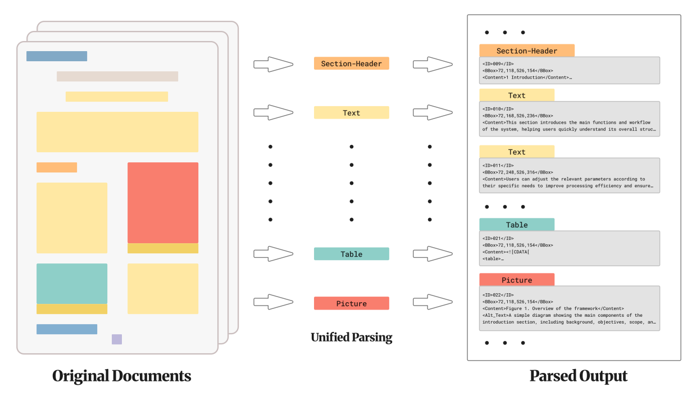
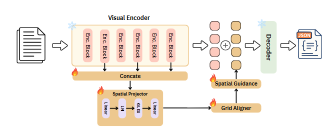

Abstract
Document understanding systems are typically evaluated as separate components via layout analysis, optical text recognition, reading-order prediction, and image captioning. This separation leaves scientific figures, captions, and visual semantics weakly connected, and fails to measure whether a model can produce a single page-level parse that is both structurally faithful and semantically accessible.
We introduce Read-Parse-Describe, a unified dataset for document parsing with visual element description generation. Given a page image, models are required to output an ordered list of layout elements containing bounding boxes, semantic labels, reading-order indices, recognized textual content, explicit caption linkages, and alternative text descriptions for visual elements. The benchmark is built from 2,402 documents, comprising 18,164 continuous pages, 125,218 layout elements, and 11,338 visual instances.

Figure 1: (a) Unified document parsing contract with localized elements, reading order, text/HTML content, caption links, and visual descriptions. (b) Domain distribution across 2,402 source documents.
SARA: Spatial Alignment Residual Adapter
Modern VLMs often compress and merge visual tokens, degrading the spatial resolution required for fine-grained bounding-box regression and two-column reading flow. SARA restores spatial fidelity without updating the backbone:
- Multi-Layer Feature Reuse: Reuses intermediate encoder layers \(\mathcal{S} = \{2, 5, 8, 11\}\) and projects channel-concatenated features into guidance representation \(G\).
- Crop-Aware Grid Alignment: Slices guidance segments corresponding to each crop grid and average-pools them to match the native merged token grid resolution \(G'\).
- Residual Gated Injection: Injects guidance directly into the native tokens \(T\) via a learnable scalar gate \(\lambda\): \(\hat{T} = T + \lambda G'\).

Figure 2: Architecture of SARA. Features from intermediate encoder layers are aligned via crop-aware pooling and injected through a gated residual connection.
Benchmark Evaluation
Test set performance across zero-shot models, full fine-tuning, and adapter tuning. The results can be filtered and sorted dynamically.
| Setting | Model | Trainable Params | DLA F1 ↑ | DLA mIoU ↑ | OCR Acc. ↑ | RO Score ↑ | METEOR ↑ | Alt. Text BERT ↑ |
|---|
Citation
@inproceedings{chen2026readparsedescribe,
title = {Read, Parse, Describe: Unified Document Parsing with Visual Element Description Generation},
author = {Chen, Yuheng and Chen, Yufan and Cai, Zhuojun and Liu, Ruiping and Zheng, Junwei and Wei, Jiale and Wen, Di and Fan, Weijia and Peng, Kunyu and Zhang, Jiaming and Stiefelhagen, Rainer},
booktitle = {Advances in Neural Information Processing Systems (NeurIPS)},
year = {2026}
}